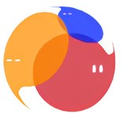

EEARS 畢業專題提案摘要
校園英語學習支援系統 × 教育資料科學／學習分析
請求：懇請劉明機教授考慮擔任大學畢業專題指導教授。
系統已上線運作；至 12 月發表前，希望在老師指導下完成題目界定、去識別化學習分析與論文化發表。
一、系統簡介
EEARS（English Enhancement and Activity Reservation System）是供 國立中山大學英語中心使用的英語學習支援平台，整合活動預約與取消、問卷門檻、英檢報名、學習歷程，以及管理端成效分析與維運。 技術棧為 Node.js／Express＋React，並已完成正式環境部署。
創新學習軟體（真實教學現場）
學習歷程整合（BESTEP／CEFR／活動）
成效分析 KPI／技能成長
問卷門檻與參與行為資料
二、與指導方向的對齊
本專題希望對齊老師專長中的創新學習軟體設計與教育資料科學／學習分析： EEARS 不僅是預約系統，更可持續累積活動參與、問卷完成與學習歷程資料，作為描述性學習分析與成效觀察的基礎 （分析採去識別化彙總；不主張未經設計的因果推論）。
三、代表性畫面（著重成效／歷程）


截圖請優先使用真實管理端畫面，並遮罩學號、姓名、證件與可識別資訊。若仍見灰色示意框，表示尚未替換為 PNG。
四、至 12 月發表的工作重點
計畫內容
- 將已上線系統整理為可發表之專題題目與貢獻敘述
- 規劃去識別化之參與／學習歷程分析指標
- 補強評測方式、書面與口頭發表品質
粗估時程
9–10 月題目確認、文獻／指標設計、資料盤點
10–11 月分析實作、結果解釋、系統補強
11–12 月報告書／簡報定稿與發表
五、希望向老師學習
- 如何用教育資料科學視角界定「可回答」的研究問題
- 學習分析指標選擇、結果解釋與研究倫理（個資／去識別）
- 如何把工程實作轉成清楚、可被檢視的專題貢獻